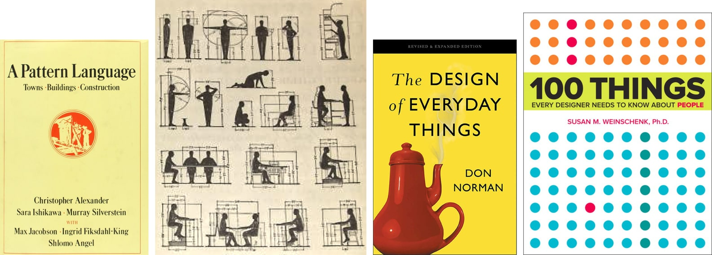
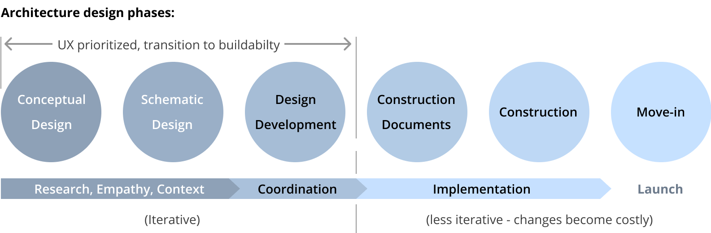
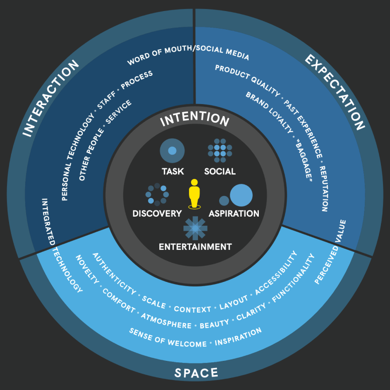
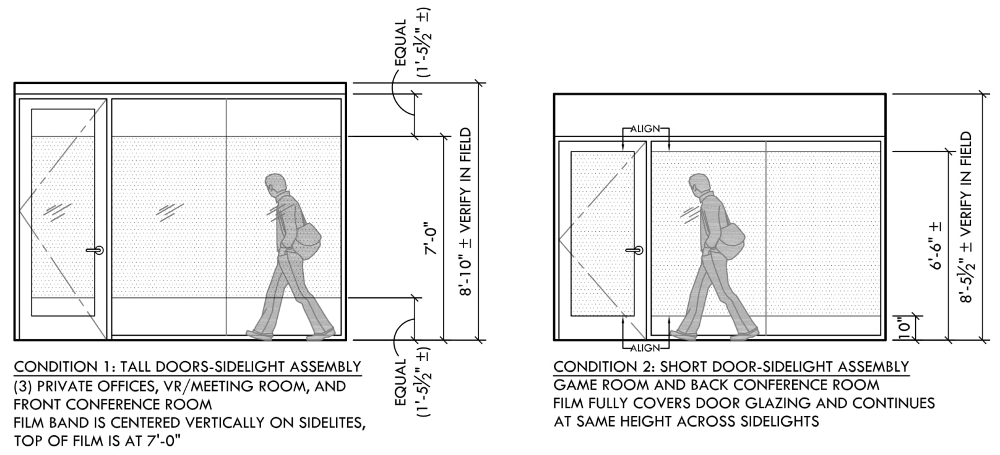

Konica-Minolta
Discovering UX design in architecture
Project work with WK Design Group
The sensitivities of a designer aren't limited to one platform. I discovered that I was a UX designer while working in the domain of architecture.
Built environments affect human experience
Human-centered design is not a new concept in architecture; in fact, it's fundamental. Architects use UX design in every project.
As the interior designer and project architect / manager for Konica-Minolta's Business Innovation Center (BIC) expansion, my work was centered around stakeholders' and end-users' goals.
Interior design is similar to UI, determining look-and-feel. Adding new spaces to a functioning physical space is similar to adding features to an existing product. They need to tie together but be appropriate for their particular uses.
UX designers and architects listen and observe
Architects meet with stakeholders and end-users for months, usually weekly, to converge on a design to meet clients' goals. This requires empathy. To prioritize goals, we attune ourselves to clients' needs (e.g. workflows, maintenance, intended use). We respect branding, budgets, and schedules. Architects also synthesize engineers' and builders' expertise, and jurisdictional requirements, to make sure a design can be realistically achieved.
UX designers and architects are systems thinkers
Architects work at multiple scales simultaneously, designing new systems within and adjacent to existing systems: usage patterns, customs, processes; logical and safe circulation; federal, state, and local requirements; building standards and engineered systems integration; repeatable components or modules for efficiency.
 UX designers and architects communicate design intent for implementation
We communicate intent, not rigid requirements, allowing other experts on the team to problem-solve. Artifacts facilitate discussion: sketches, representations, visual layouts, mappings in 2, 3, and 4 dimensions. Each communication is a mini-UX problem: for end-users to exchange feedback, for stakeholders to justify the project to management, for construction managers to align to budget and schedule, for engineers to calculate, for authorities to approve, for contractors to build.

Tangible Results
Regional management for Konica-Minolta appreciated the playfulness and sohpistication that the carpet design brought to the space, and requested that it be added to their global design guidelines for future offices.
Iterant
Matthew Sensky, Founder/CEO
User Experience
Nilpa Jhaveri, Consulting Designer
Advisor
Todd Fulton, Consulting Engineer